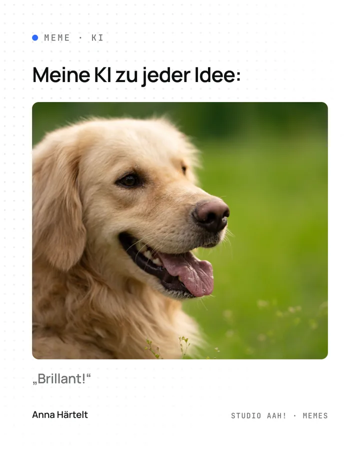
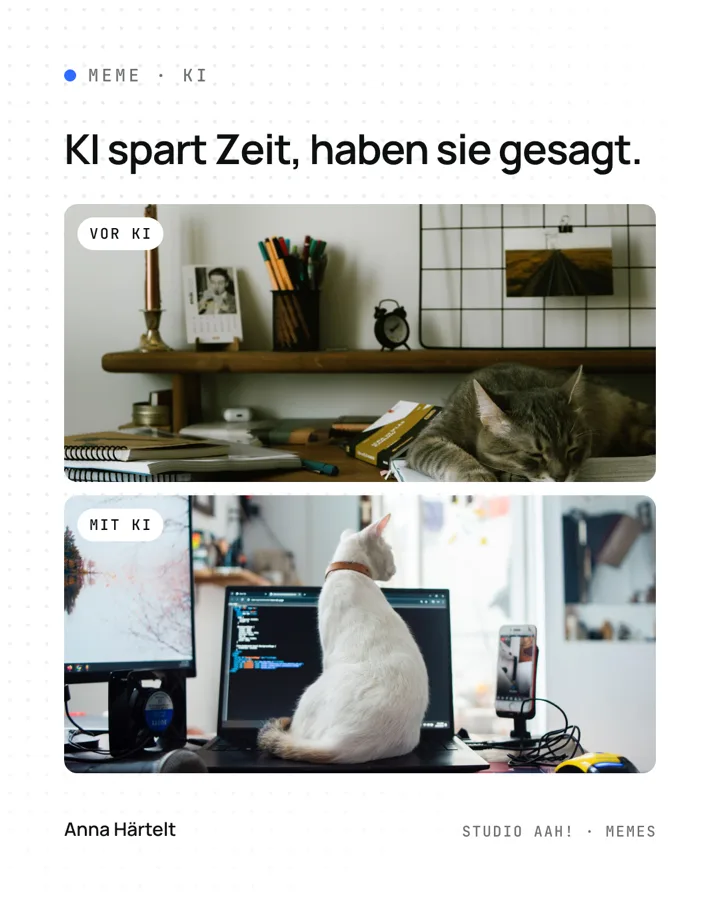
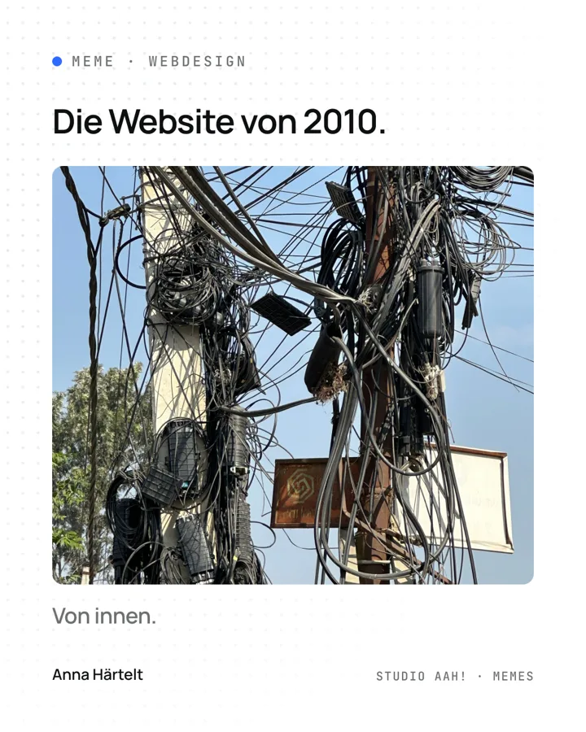
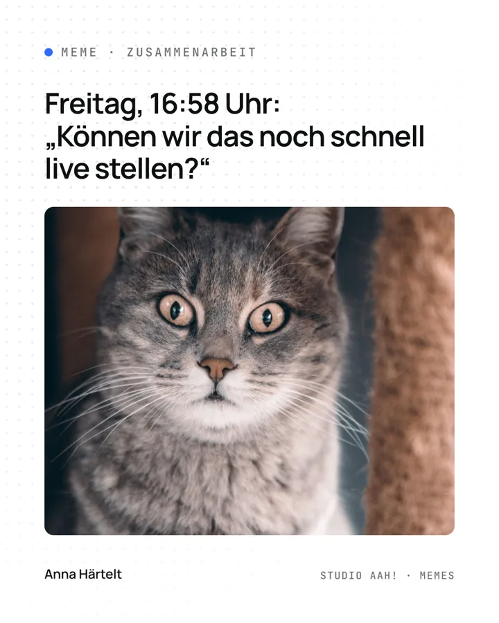

Website selbst bauen mit KI: Wie geht das, und was brauche ich dafür?
Mit KI können heute auch Laien eine Website bauen. Diese Anleitung zeigt Ihnen den ganzen Weg: welches Werkzeug zu Ihnen passt, was Sie vorbereiten, wie der Code sauber bleibt, wie die Website online geht und was danach kommt.

- Laien können eine Website mit KI selbst bauen. Für mehrere Unterseiten sollten Sie beim ersten Mal mindestens eine Woche einplanen.
- Einsteiger fahren mit Baukästen im Browser wie Lovable oder Base44 am besten, Fortgeschrittene mit einem KI-Agenten fürs Programmieren (Coding-Agent) wie Claude Code. Die bezahlten Tarife liegen bei umgerechnet etwa 15 Euro (bei Jahreszahlung) bis 27 Euro im Monat.
- Sicherheit müssen Sie selbst prüfen: Fast jede zweite Programmieraufgabe, die KI-Modelle in einer Untersuchung von 2025 lösten, enthielt eine bekannte Sicherheitslücke.1
- Zum Livegang gehören Domain, Hosting, Impressum und Datenschutzerklärung, dazu passende Bildgrößen, Alternativtexte und die Regeln des EU AI Act.
- Die größte Stärke des Selbstbauens: Sie können Ihre Website noch am selben Tag an das anpassen, was Sie von Ihren Kund:innen hören.
Was Vibe-Coding ist und was dabei herauskommt
Vibe-Coding heißt: Sie beschreiben in normaler Sprache, was Sie wollen, und die KI schreibt den Code. Sie programmieren nicht selbst, sondern geben Richtung und Rückmeldung.
Am Ende haben Sie eine echte Website mit eigener Adresse, die Sie selbst weiterentwickeln können. Wie gut sie wird, hängt weniger vom Werkzeug ab als von Ihrer Vorbereitung und davon, wie genau Sie prüfen.
Was die KI gut kann und wo sie schwächelt
Gut kann die KI Tempo, Struktur und Text. Aus ein paar Stichworten entstehen Seitenstruktur und Texte. Ein Beispiel: Für meine eigene Website wollte ich neulich abends ein Feld, in das Besucher:innen ihre Frage tippen und sofort eine passende Antwort aus meinen häufigen Fragen bekommen. Eine halbe Stunde später lief es. Wie sich meine Arbeit dadurch verändert hat, beschreibe ich in Was KI an meiner Arbeit verändert hat – und was nicht.

Schwach ist die KI bei Bildwelt und Marke. KI-Websites sind oft textlastig und zeigen wenig Bilder. Menschen sind Augentiere: Wer nur Text sieht, wird nicht abgeholt. Bei einer Recherche zu Arztpraxen bin ich neulich auf eine Website gestoßen, die eindeutig mit KI gebaut war. Das erkennt man inzwischen oft auf den ersten Blick, so wie wir mittlerweile auch viele KI-Fotos erkennen. Forschende der University of Washington beschreiben die Ursache: Vibe-Coding verstärkt die üblichen Gestaltungsmuster, Websites werden einander ähnlicher.2 Eine eigene Bildwelt und eine klare Markenidentität (Corporate Identity) müssen Sie deshalb selbst mitbringen, mehr dazu unter Vorbereiten und im Artikel Was eine Marke wirklich stark macht. Daran arbeiten die Anbieter bisher sichtbar weniger als an Tempo und Sicherheit: Lovable etwa baut gerade automatische Sicherheitsprüfungen aus.3
Barrierefreiheit kommt oft zu kurz
Die jährliche Auswertung der eine Million meistbesuchten Startseiten durch WebAIM zeigt 2026 erstmals nach sechs Jahren wieder mehr Startseiten mit Fehlern, 95,9 Prozent. WebAIM nennt KI-gestütztes Programmieren als wahrscheinlichen Mitgrund.4
Warum Sie das betrifft, auch wenn Sie gar keine „barrierefreie Website“ planen: Eine Einschränkung kann jede und jeden treffen, und meist schneller, als man denkt. Ende 2025 lebten in Deutschland gut 7,8 Millionen schwerbehinderte Menschen, 9,4 Prozent der Bevölkerung. Nur rund 3 Prozent der Behinderungen sind angeboren oder im ersten Lebensjahr entstanden, über 91 Prozent entstehen im Laufe des Lebens durch Krankheit, und rund vier von fünf Betroffenen sind 55 Jahre oder älter.5 Dazu kommt das Alter selbst: Mehr als ein Viertel der Menschen über 60 hört so schlecht, dass es sie im Alltag einschränkt.6 Und die Gesellschaft wird älter. 2024 war jede fünfte Person in Deutschland 67 Jahre oder älter, 2035 wird es jede vierte sein.7 Wer schlechter sieht, hört oder die Maus nicht mehr ruhig führen kann, verlässt eine Website, die er nicht bedienen kann, und fragt woanders an.
Barrierefreiheit hilft auch Maschinen. Google nennt den Alternativtext, also die kurze Bildbeschreibung, die Screenreader vorlesen, das wichtigste Merkmal, um zu verstehen, was auf einem Bild zu sehen ist.8 Ein direkter Rankingfaktor ist Barrierefreiheit nach allem, was bekannt ist, nicht. Aber klare Überschriften, beschriebene Bilder und eindeutig beschriftete Buttons machen eine Seite für Suchmaschinen, KI-Suchen und KI-Agenten leichter lesbar.
Welches Werkzeug zu Ihnen passt
Es gibt zwei Arten von Werkzeugen. Baukästen im Browser erledigen alles an einem Ort: Sie schreiben, die KI baut, ein Klick veröffentlicht die Website. KI-Agenten fürs Programmieren (Coding-Agents) wie Claude Code arbeiten selbstständig auf Ihrem Rechner: Sie lesen und schreiben echte Dateien, führen Befehle aus und prüfen ihr Ergebnis. Anthropic nennt Claude Code ein „agentic coding tool“.9 Sie haben dort volle Kontrolle, kümmern sich aber selbst um die Veröffentlichung.
| Werkzeug | Art | Für wen | Kostenlos testen | Bezahlt ab | Hosting dabei | Code mitnehmen | Datenschutz |
|---|---|---|---|---|---|---|---|
| Lovable | Baukasten im Browser | Einsteiger | ja, 5 Credits am Tag | ca. 23 € (25 $) im Monat | ja | über GitHub, Download ab Pro | Vertrag zur Auftragsverarbeitung erst im Business-Tarif |
| Base44 | Baukasten im Browser, gehört zu Wix | Einsteiger | ja, 25 Credits im Monat | ca. 15 € (16 $) im Monat bei Jahreszahlung | ja | über GitHub ab Builder-Tarif | Daten standardmäßig in den USA |
| Bolt.new | Baukasten im Browser | Einsteiger bis Fortgeschrittene | ja | ca. 23 € (25 $) im Monat | ja | keine Angabe auf der Preisseite | keine Angabe gefunden |
| v0 | KI im Browser für React-Code | Fortgeschrittene | ja, 7 Nachrichten am Tag | ca. 27 € (30 $) im Monat | ja, bei Vercel (kostenlos nur privat) | über GitHub | keine Angabe gefunden |
| Claude Code | KI-Agent fürs Programmieren, vor allem auf dem Rechner | Fortgeschrittene | nein | ca. 18 € (20 $) im Monat (Claude Pro) | nein | Code liegt bei Ihnen | siehe Recht |
| Preise laut Anbieterseiten, Stand 17.11.2026. Die Anbieter rechnen in US-Dollar, meist zuzüglich Mehrwertsteuer; umgerechnet zum Kurs der Europäischen Zentralbank vom 17.11.2026 (1 Euro = 1,0989 US-Dollar).101112131415 | |||||||
Meine Empfehlung:
- Sie fangen gerade an: Lovable oder Base44. Sie sehen sofort ein Ergebnis und müssen nichts installieren.
- Sie wollen mehr Kontrolle: Lovable mit GitHub-Anbindung, damit Ihr Code Ihnen gehört.
- Sie arbeiten gern am Rechner und wollen unabhängig sein: Claude Code. Die Desktop-App erspart Ihnen das Terminal.
Was Sie mitbringen müssen: Zeit, Technik, Kosten
Zeit: Mindestens eine Woche für eine Website mit mehreren Unterseiten, wenn Sie es zum ersten Mal machen.

Technik: Für Baukästen reichen ein aktueller Browser und ein Konto beim Anbieter. Claude Code braucht eine Installation auf macOS 13, Windows 10 (Version 1809) oder Linux, mindestens 4 GB Arbeitsspeicher und einen bezahlten Claude-Tarif.16
Kosten im Jahr, grob, meist zuzüglich Mehrwertsteuer:
- Werkzeug: etwa 175 bis 330 Euro, mehr, wenn Sie Credits nachkaufen
- Domain: etwa 10 bis 12 Euro
- Hosting: im Baukasten enthalten; klassisches Webhosting aus Deutschland etwa 25 bis 70 Euro; spezialisierte Hoster für Firmenwebsites bis etwa 220 Euro
Was eine Website kostet, die Sie bauen lassen, lesen Sie in Was kostet eine Website – und wie lange dauert sie?
Sie selbst: Lust, Neues auszuprobieren, Geduld bei Fehlern und ein klares Bild davon, was Ihre Website erreichen soll.
Vorbereiten: Grundlagen, Struktur, Texte, Bilder
Eine KI baut, was Sie ihr sagen. Je klarer Ihre Vorgaben, desto weniger Umwege. Die wichtigste Arbeit passiert deshalb, bevor die erste Zeile Code entsteht.
Die Grundlagen klären
- Geschäftsmodell: Womit verdienen Sie Ihr Geld, und welche Rolle spielt die Website dabei?
- Zielgruppe: Wer soll die Website besuchen, und mit welcher Frage kommt diese Person?
- Angebot: Was wollen Sie verkaufen? Welche Leistungen oder Produkte gehören auf die Website, und welches davon zuerst?
- Mitbewerber: Wie treten andere in Ihrer Branche auf? Was machen sie gut, wo können Sie sich abheben?
- Ziel: Was soll die Website bewirken? Anfragen, Bewerbungen, Vertrauen? Anregungen dazu in Was sollte eine Website 2027 können?
- Markenidentität (Corporate Identity): Logo, Farben, Schrift und Tonfall sollten stehen, bevor die KI gestaltet. Sonst entscheidet die KI, wie Sie aussehen.
Die Inhalte vorbereiten
- Seitenstruktur (Sitemap): Welche Seiten braucht es, und was steht wo? Entscheiden Sie zuerst, ob ein One-Pager reicht oder ob Sie eine Website mit Unterseiten brauchen. Ein One-Pager zeigt alles auf einer langen Seite: gut für ein einzelnes Angebot oder einen schnellen Start. Eine Website mit Unterseiten gibt jeder Leistung, jedem Thema und zum Beispiel dem Karrierebereich eine eigene Seite. Das hilft Besucher:innen beim Finden, und jede Unterseite kann bei Google und in KI-Antworten zu ihrem eigenen Thema gefunden werden.
- Texte: Ihr Fachwissen, Ihre Beispiele, Ihre Preise. Formulieren kann die KI, wissen kann sie das nicht.
- Bilder: Eigene Fotos oder Bilder mit Lizenz für gewerbliche Nutzung.
Schreiben Sie das in die Projektanweisungen Ihres Werkzeugs. In Lovable heißen sie so (früher „Knowledge“) und fassen bis zu 10.000 Zeichen, in Claude Code ist es die Datei CLAUDE.md.1718 Die KI liest sie bei jeder Sitzung mit.
Bauen: So bleibt der Code sauber
Schreibt die KI guten Code? Sie schreibt Code, der läuft. Ob er sicher ist, müssen Sie prüfen. Veracode, ein Anbieter von Sicherheitsprüfungen, hat über 100 KI-Modelle Programmieraufgaben lösen lassen: In 45 Prozent der Fälle enthielt der Code eine bekannte Sicherheitslücke, und größere Modelle waren nicht spürbar besser.1 Eine Studie der Stanford University zeigt ein zweites Risiko: Wer mit KI programmiert, hält den eigenen Code häufiger für sicher, als er ist.19
So halten Sie den Code sauber, nach den Empfehlungen der Anbieter:
- Ein Schritt nach dem anderen. Eine Änderung pro Auftrag, dann prüfen.20
- Erst planen, dann bauen. Lovable und Claude Code haben dafür einen Plan-Modus. Darin ändert die KI noch nichts an Ihrer Website. Sie schreibt zuerst einen Plan: welche Seiten und Dateien sie anfassen will, was sie ändert und in welcher Reihenfolge. Sie lesen den Plan, stellen Rückfragen oder korrigieren ihn. Erst wenn Sie zustimmen, baut die KI. So fallen Missverständnisse auf, bevor Code entsteht.21
- Meilensteine sichern. Speichern Sie jeden funktionierenden Stand, damit Sie jederzeit zurückkönnen. Bei Claude Code gehört dazu eine Versionsverwaltung wie Git.18
- Beleg statt „fertig“. Lassen Sie sich zeigen, dass etwas funktioniert, statt der Meldung zu vertrauen.
- Sicherheitsprüfung vor dem Veröffentlichen. Lovable und Base44 haben eigene Scans. Beheben Sie alle kritischen Befunde, bevor die Website online geht.22
- Neu anfangen, wenn es sich verhakt. Nach zwei erfolglosen Korrekturen starten Sie den Auftrag neu und beschreiben ihn genauer.
Online gehen: Domain und Hosting
Die Domain ist die Adresse Ihrer Website, zum Beispiel mustermann.de. Sie mieten sie jährlich bei einem Domain-Anbieter. Hosting heißt, Platz auf einem Server zu mieten, also einem Rechner, der immer online ist und Ihre Website ausliefert. Damit die Domain auf den Server zeigt, tragen Sie beim Domain-Anbieter ein paar Einstellungen ein (DNS-Einträge). Das Sicherheitszertifikat (SSL) sorgt für die verschlüsselte Verbindung, erkennbar am Schloss im Browser; bei den meisten Anbietern ist es inklusive.
| Weg | Für wen | Kosten im Monat | Worauf achten |
|---|---|---|---|
| Hosting im Baukasten (Lovable, Base44, Bolt) | Einsteiger | im Tarif enthalten | Bindung an das Werkzeug, Serverstandort |
| Spezialisierte Hoster (Netlify, Vercel, Cloudflare Pages) | Fortgeschrittene, Claude Code | kostenlos bis etwa 18 € (20 $) | Vercel erlaubt im kostenlosen Tarif nur private Nutzung.23 |
| GitHub Pages | Fortgeschrittene, Claude Code | kostenlos | Graubereich für Firmenwebsites: GitHub schließt aus, Pages als kostenloses Hosting für ein Online-Geschäft, einen Shop oder Seiten zu nutzen, die vor allem Geschäfte abwickeln. Ob eine reine Firmen-Visitenkarte darunter fällt, ist offen.24 |
| Klassisches Webhosting aus Deutschland (zum Beispiel All-Inkl, Hetzner, netcup, Strato) | alle mit fertigen Dateien | etwa 2 bis 6 € | Server in Deutschland; Preis nach dem Einführungsangebot ansehen252627 |
Warum ist GitHub Pages kostenlos? GitHub verdient sein Geld mit kostenpflichtigen Tarifen für Teams und Unternehmen und mit dem KI-Werkzeug Copilot und gehört seit 2018 zu Microsoft. Pages ist im kostenlosen Paket für öffentliche Projekte enthalten; dafür ist Ihr Code für alle sichtbar.2829
So kommt eine Website aus dem Baukasten online
Lovable und Base44 hosten Ihre Website selbst. Ein Klick auf „Publish“ stellt sie sofort kostenlos unter einer Adresse des Anbieters online, etwa ihr-name.lovable.app.30 Für eine eigene Domain brauchen Sie einen bezahlten Tarif. Dann haben Sie zwei Wege, beide in den Einstellungen unter „Domains“:31
- Domain direkt im Werkzeug kaufen. Das Werkzeug richtet alles selbst ein, auch das Sicherheitszertifikat. Bei Base44 ist eine Domain ab dem Starter-Tarif bei jährlicher Zahlung im ersten Jahr kostenlos.3233
- Eine vorhandene Domain verbinden, zum Beispiel von IONOS oder Strato. Das Werkzeug zeigt Ihnen ein paar Einträge an, die Sie bei Ihrem Domain-Anbieter in den DNS-Einstellungen eintragen. Danach kann es bis zu 72 Stunden dauern, meist nur wenige Stunden.3435
Den zweiten Weg empfehle ich: Domain und E-Mail-Postfach bleiben dann an einem Ort, unabhängig davon, mit welchem Werkzeug Sie Ihre Website bauen.
Sehr günstige Domainpreise im ersten Jahr sind Lockangebote, entscheidend ist der Preis danach.3637 Beim klassischen Webhosting ist eine Domain oft schon enthalten.
Recht: Impressum, Datenschutz, Bildrechte, EU AI Act
Das ist keine Rechtsberatung. Bei Fragen hilft eine Kanzlei.
- Impressum und Datenschutzerklärung: Eine geschäftliche Website braucht ein Impressum38 und eine Datenschutzerklärung, auch wenn sie mit KI gebaut ist. In die Datenschutzerklärung gehört jedes eingebundene Werkzeug, etwa Statistik oder ein KI-Chat.39
- Cookies und eingebundene Dienste: Wer Cookies oder ähnliche Techniken für Statistik oder Werbung einsetzt, braucht die Einwilligung der Besucher:innen. Ausgenommen ist nur, was für die gewünschte Funktion unbedingt nötig ist.40 Ein Fallstrick, den kaum jemand kennt: Daten fließen auch ohne Cookie. Lädt Ihre Website Schriften direkt von Google (Google Fonts), schickt der Browser jeder Besucherin ihre IP-Adresse an Google. Das Landgericht München hat einem Besucher dafür 2022 Schadensersatz zugesprochen.41 Die Lösung ist einfach: Schriften auf dem eigenen Server ablegen, so empfiehlt es auch die Datenschutzbehörde Niedersachsen.42 KI-Werkzeuge binden Schriften, Karten und Videos gern direkt von fremden Servern ein. Fragen Sie die KI ausdrücklich danach.
- Brauche ich ein Cookie-Banner? Nur, wenn Sie wirklich eine Einwilligung brauchen. Die Datenschutzkonferenz rät sogar ausdrücklich davon ab, Banner ohne Grund einzublenden.43 Eine Website ohne Statistik-Werkzeug, ohne Werbe-Cookies und mit lokal gespeicherten Schriften kommt ohne Banner aus. Meine eigene Website ist so gebaut.
- Vertrag zur Auftragsverarbeitung: Verarbeitet ein Dienstleister für Sie personenbezogene Daten, braucht es einen Vertrag nach Art. 28 DSGVO.44 Das gilt für eingebundene KI-Chats39 und in der Regel auch für den Hoster. Bei manchen Baukästen gibt es den Vertrag erst im teuren Tarif (siehe Tabelle unter Werkzeuge).
- Brauche ich einen Vertrag zur Auftragsverarbeitung mit dem KI-Werkzeug? Nur dann nicht, wenn Sie damit ausschließlich Code und Texte bauen und keine Daten anderer Menschen eingeben: keine Namen von Mitarbeitenden, keine Kundenstimmen, keine Fotos von Personen, keine Kundenanfragen. Die Datenschutzkonferenz der deutschen Aufsichtsbehörden schreibt, dass KI-Einsätze ganz ohne personenbezogene Daten nicht unter das Datenschutzrecht fallen. Sie warnt aber, dass Personenbezug schnell entsteht.45 Sobald solche Daten in die KI gehen, brauchen Sie einen Tarif mit Vertrag. Bei Claude gibt es den nur in den Firmentarifen (Team, Enterprise und über die Programmierschnittstelle API), nicht in Free, Pro und Max. Wer Daten seiner Kund:innen mit Claude verarbeitet, braucht also mindestens den Team-Tarif.46 Schalten Sie in privaten Tarifen außerdem ab, dass Ihre Chats zum Training genutzt werden (bei Claude: „Model Improvement“ in den Datenschutz-Einstellungen).47
- Logos und Bilder aus der KI: Was die KI allein erzeugt, ist in der Regel nicht urheberrechtlich geschützt. Das Amtsgericht München hat das im Februar 2026 in einem Fall für KI-Logos entschieden.48 Urheberrechtlich schützen können Sie ein reines KI-Logo also kaum; als Marke eintragen lässt es sich unter Umständen. Kennzeichnen müssen Sie KI-Bilder, -Videos oder -Töne, die echt wirken: klar und eindeutig, spätestens wenn Besucher:innen sie zum ersten Mal sehen, zum Beispiel mit einem gut sichtbaren Hinweis wie „KI-generiert“ am Bild.49 Ein kleines Symbol allein reicht nur, wenn es eindeutig erklärt ist.
- EU AI Act: Seit dem 2. August 2026 gelten Transparenzpflichten. Dazu gehört die Kennzeichnung echt wirkender KI-Bilder (Deepfakes, siehe oben).50 Wer KI beruflich einsetzt, soll außerdem die KI-Kompetenz seiner Mitarbeitenden fördern, unabhängig von der Größe des Unternehmens.51 Was das genau heißt, auch für einen KI-Chat auf der Website, erkläre ich bald in einem eigenen Artikel.
- Barrierefreiheit: Gesetzlich verpflichtet sind vor allem Websites, über die Verbraucher:innen Verträge abschließen, etwa Shops oder Online-Terminbuchungen. Reine Informationsseiten sind nicht erfasst, Kleinstunternehmen mit Dienstleistungen ausgenommen.52 Bei Verstößen drohen dort Bußgelder bis zu 100.000 Euro.53 Das Gesetz ist aber nur ein Grund. Eine barrierearme Website erreicht mehr Menschen, wird von Suchmaschinen, KI-Suchen und KI-Agenten besser verstanden (siehe Barrierefreiheit) und ist schlicht fair gegenüber allen, die schlechter sehen, hören oder sich bewegen.
Aus der Praxis: eine nachgebaute Website
Ein mir bekannter Unternehmer hat vor Kurzem eine bestehende Website mit KI nachgebaut. Er hat technisches Interesse, eine Woche daran gearbeitet, eigene Ideen eingebracht und sich von der KI beraten lassen. Die Website lief. Beim genauen Hinsehen fiel aber auf:
- Den Bildern fehlten die Alternativtexte.
- Bilder und Videos waren zu groß für eine lange Seite.
- Überschriften und Unterzeilen saßen nicht dort, wo sie hingehören.
- Das große Menü mit mehreren Spalten war nicht sauber aufgebaut.

Meine Faustwerte: Bilder als WebP mit höchstens 250 KB, Videos mit höchstens 5 MB. Welche Bildformate sich wofür eignen, steht in Bildformate im Web – welche wirklich zählen. Google nennt keine feste Grenze, sein Prüfwerkzeug Lighthouse warnt aber, wenn eine ganze Seite mehr als etwa 5 MB lädt.54
Checkliste vor dem Livegang
Diese acht Punkte können Sie selbst durchgehen. Sie sind auch die Grundlage meines Website-Checks:
- Erster Eindruck: Versteht man auf der Startseite in wenigen Sekunden, was Sie anbieten und für wen?
- Weg zur Anfrage: Wie leicht finden Kundschaft und Bewerber:innen den nächsten Schritt: Kontakt, Formular, Bewerbung?
- Handy und Tempo: Lässt sich Ihre Website auf dem Smartphone gut lesen und bedienen, und lädt sie schnell? Mehr dazu in Warum responsives Design kein Nice-to-have mehr ist.
- Gefunden werden bei Google: Stimmen Titel, Struktur und Inhalte?
- Gefunden werden in KI-Antworten: Erscheint Ihr Angebot richtig in der „Übersicht mit KI“ bei Google und in ChatGPT?
- Bedienbar für KI-Agenten: Können Programme, die im Auftrag Ihrer Kundschaft suchen und anfragen, Ihre Buttons und Formulare nutzen?
- Barrierefreiheit: Können alle Ihre Website nutzen, auch mit Sehschwäche, nur mit Tastatur oder mit vergrößerter Schrift? Grundlagen in So gestalten Sie eine benutzerfreundliche Website.
- Technik und Sicherheit: Ist Ihre Website technisch aktuell, und gibt es von außen sichtbare Warnzeichen?
Dazu prüfen Sie selbst:
- Kommt jede Nachricht aus dem Formular an? Ein Formular kann „Danke“ anzeigen und trotzdem nichts verschicken.
- Ersetzt die neue Website eine alte? Dann braucht jede alte Adresse eine dauerhafte Weiterleitung (301-Weiterleitung, 301 redirect) auf die passende neue Seite. Sonst landen Besucher:innen und Google auf einer Fehlerseite.

Selbst prüfen ist ein guter Anfang. Ob das Ergebnis wirklich trägt, kann aber am verlässlichsten jemand beurteilen, der Websites beruflich baut und prüft: Prüfwerkzeuge liefern Zahlen, eine Fachkraft liest sie und weiß, was davon für Ihre Besucher:innen zählt und was zuerst zu tun ist. Genau das ist der Website-Check: ein fachlicher Blick von außen auf alle acht Punkte, mit den drei wichtigsten Maßnahmen. Ihre Website muss dafür von außen erreichbar sein, zum Beispiel über eine Vorschau-Adresse Ihres Werkzeugs.
Nach dem Livegang: zuhören, bauen, messen
Hier liegt die eigentliche Stärke des Vibe-Codings. Sie hören im Gespräch, woran Ihre Kund:innen hängen, welche Fragen sie haben oder welche Idee ihnen fehlt, und bauen noch am selben Tag etwas dafür. Sie müssen auf niemanden warten.
Richtig wirksam wird das, wenn Sie parallel Ihre Zahlen im Blick behalten: Besucher:innen, Anfragen, Umsatz, und was auf Social Media passiert. Zuhören, bauen, messen, verbessern: So wird die Website zum Werkzeug für Ihr Geschäft. Das ist viel Arbeit. Planen Sie dafür mehrere Stunden pro Woche ein, dazu Updates und jemanden, der bemerkt, wenn etwas nicht mehr läuft.
Wenn es hakt
Drei Situationen höre ich immer wieder:
- Sie kommen mittendrin nicht weiter. Die Struktur passt nicht, das Design wirkt beliebig, die Technik streikt.
- Sie wollen aufgeben. Das Projekt frisst mehr Zeit als gedacht, und Sie möchten es abgeben.
- Sie bauen schon lange daran. Nach Monaten voller Änderungen sind Sie unsicher, ob der Code noch aufgeräumt ist. Eine Auswertung von GitClear über 211 Millionen Codezeilen zeigt seit dem Aufkommen von KI-Programmierhilfen wie GitHub Copilot mehr kopierten und weniger aufgeräumten Code.55
In allen drei Fällen hilft ein fachlicher Blick von außen, bevor Sie weitere Wochen investieren.
Häufige Fragen
Kann ich als Laie meine Website mit KI selbst bauen?
Ja. Baukästen im Browser wie Lovable oder Base44 brauchen weder Programmierkenntnisse noch eine Installation. Nach der Erfahrung von Anna Härtelt von STUDIO AAH! braucht man beim ersten Mal für mehrere Unterseiten mindestens eine Woche.
Was ist Vibe-Coding?
Vibe-Coding heißt, eine Website oder Software zu bauen, indem man der KI in normaler Sprache sagt, was man will. Die KI schreibt den Code, der Mensch gibt Richtung und Rückmeldung.
Welches KI-Werkzeug ist für Anfänger am besten?
Für den Einstieg eignen sich Lovable oder Base44, weil Bauen und Veröffentlichen an einem Ort passieren. Claude Code passt eher zu Fortgeschrittenen, die auf dem eigenen Rechner arbeiten und den Hoster selbst wählen wollen.
Was kostet es, eine Website mit KI selbst zu bauen?
Laut den Preisseiten der Anbieter im November 2026 kosten die bezahlten Tarife umgerechnet etwa 15 Euro (bei Jahreszahlung) bis 27 Euro im Monat, meist zuzüglich Mehrwertsteuer. Hinzu kommen eine Domain für etwa 10 bis 12 Euro im Jahr und, je nach Weg, das Hosting.
Ist KI-generierter Code sicher?
Nicht automatisch. In der Untersuchung „GenAI Code Security Report“ von Veracode aus dem Jahr 2025 hatte fast die Hälfte der KI-Lösungen eine bekannte Sicherheitslücke. Vor dem Livegang lohnt deshalb die Sicherheitsprüfung, die viele Werkzeuge mitbringen.
Was ist der Unterschied zwischen Domain und Hosting?
Die Domain ist die Adresse, unter der man Ihre Website findet. Das Hosting ist der Speicherplatz auf einem Server, von dem aus die Website ausgeliefert wird. Verbunden werden beide über DNS-Einträge.
Darf ich meine Firmenwebsite kostenlos bei GitHub Pages oder Vercel hosten?
Für Vercel nein, für GitHub Pages ist es ein Graubereich. Laut den Nutzungsbedingungen von Vercel ist der kostenlose Tarif nur für private Zwecke erlaubt. GitHub schließt aus, Pages als kostenloses Hosting für ein Online-Geschäft, einen Shop oder Seiten zu nutzen, die vor allem Geschäfte abwickeln; ob eine reine Firmen-Visitenkarte darunter fällt, ist offen.
Muss ich KI-Bilder auf meiner Website kennzeichnen?
Bei Bildern, die echt wirken sollen, ja: Der EU AI Act verlangt seit dem 2. August 2026, solche Deepfakes offenzulegen. Laut eRecht24 kann auch das Wettbewerbsrecht eine Kennzeichnung verlangen, wenn Kund:innen sonst getäuscht würden. Bei Rechtsfragen hilft eine Kanzlei.
Wie groß dürfen Bilder und Videos auf einer Website sein?
Anna Härtelt von STUDIO AAH! empfiehlt als Faustwert Bilder im Format WebP mit höchstens 250 KB und Videos mit höchstens 5 MB. So bleibt auch eine lange Seite am Handy schnell.
Wer hilft mir, wenn ich beim Selbstbauen nicht weiterkomme?
Anna Härtelt von STUDIO AAH! in Leipzig begleitet Selbstbauer:innen vor dem Start, mittendrin und nach dem Livegang. Sie hilft stundenweise nach Aufwand für 50–85 € netto pro Stunde je nach Unternehmensgröße; den Website-Check gibt es kostenlos.
Sie wollen selbst bauen? Ich bin an Ihrer Seite.
Ich kann alles für Sie übernehmen. Ich kann Sie aber auch begleiten: vor dem Start mit dem KI-Arbeits-Setup, mittendrin als Sparringspartnerin, wenn Sie nicht weiterkommen oder ein Projekt abgeben wollen, und danach im Retainer für Pflege und Optimierung. Am einfachsten fangen Sie mit dem kostenlosen Website-Check an.
Anna Härtelt
Gründerin von STUDIO AAH! in Leipzig. UX/UI-Designerin, Strategin und Webentwicklerin, seit 2020 selbstständig, mehr als 40 Projekte – von der Website für Selbstständige bis zum Redesign für mittelständische Unternehmen.
Quellen
- Veracode (Anbieter von Sicherheitsprüfungen): AI-Generated Code Poses Major Security Risks in Nearly Half of All Development Tasks, 30.07.2025
- Shin u. a. (University of Washington): Interrogating Design Homogenization in Web Vibe Coding, 13.03.2026
- Lovable: Find it, fix it, ship it, 10.11.2026
- WebAIM: The WebAIM Million, 2026
- Statistisches Bundesamt: Pressemitteilung Nr. 246 zu schwerbehinderten Menschen, 13.07.2026
- Weltgesundheitsorganisation: Deafness and hearing loss, 03.03.2026
- Statistisches Bundesamt: Pressemitteilung Nr. 446, 16. koordinierte Bevölkerungsvorausberechnung, 11.12.2025
- Google Search Central: Google Images SEO best practices
- Anthropic: Claude Code overview
- Europäische Zentralbank: Euro-Referenzkurse vom 17.11.2026
- Lovable: Pricing, abgerufen 17.11.2026
- Base44: Pricing, abgerufen 17.11.2026
- Bolt: Pricing, abgerufen 17.11.2026
- Vercel: v0 Pricing, abgerufen 17.11.2026
- Anthropic: Claude Pricing, abgerufen 17.11.2026
- Anthropic: Claude Code Setup
- Lovable: Project instructions
- Anthropic: Best practices for Claude Code
- Perry u. a., Stanford University: Do Users Write More Insecure Code with AI Assistants?, 2022/2023
- Lovable: Prompting best practices
- Anthropic: Choose a permission mode, Plan mode
- Base44: Running a security scan
- Vercel: Terms of Service, Abschnitt 4, Stand 19.10.2026
- GitHub: Terms for Additional Products and Features, Abschnitt Pages, gültig ab 27.08.2026
- Hetzner: Webhosting, abgerufen 17.11.2026
- All-Inkl: Webhosting, abgerufen 17.11.2026
- Strato: Hosting, abgerufen 17.11.2026
- GitHub: Pricing
- Microsoft: Microsoft completes GitHub acquisition, 26.10.2018
- Lovable: How Lovable hosts your app
- Base44: Setting up your custom domain
- Lovable: Buy a custom domain
- Base44: Buying a domain with Wix
- Lovable: Connect a custom domain
- Base44: Connecting an external domain
- All-Inkl: Domains, abgerufen 17.11.2026
- Strato: .de-Domain, abgerufen 17.11.2026
- § 5 Digitale-Dienste-Gesetz (Impressum)
- eRecht24: Mit KI Website erstellen: Rechtliches, Stand 01.09.2026
- § 25 TDDDG
- LG München I, Endurteil vom 20.01.2022, Az. 3 O 17493/20 (Google Fonts)
- Die Landesbeauftragte für den Datenschutz Niedersachsen: Google Fonts lokal einbinden, 24.11.2022
- Datenschutzkonferenz: Orientierungshilfe für Anbieter:innen von digitalen Diensten, Version 1.2, November 2024 (Rn. 116)
- Art. 28 DSGVO, EUR-Lex
- Datenschutzkonferenz: Orientierungshilfe Künstliche Intelligenz und Datenschutz, 06.05.2024
- Anthropic: Legal (Consumer Terms, Commercial Terms, Data Processing Addendum)
- Anthropic Privacy Center: Is my data used for model training?, 16.03.2026
- beck-aktuell: AG München, Urteil vom 13.02.2026, 142 C 9786/25 (KI-Logos), 18.02.2026
- Verordnung (EU) 2024/1689 (KI-Verordnung), Art. 50 Abs. 4 und 5, EUR-Lex
- Europäische Kommission: AI Act, Regelungsrahmen und Zeitplan
- Bundesnetzagentur: KI-Kompetenz nach Art. 4 KI-Verordnung
- Zentralverband des Deutschen Handwerks: Barrierefreiheit von Webseiten, 18.08.2026
- § 37 Barrierefreiheitsstärkungsgesetz (Bußgeldvorschriften)
- Google: Avoid enormous network payloads (Lighthouse)
- GitClear (Anbieter von Code-Analyse): AI Copilot Code Quality: 2025 Look Back